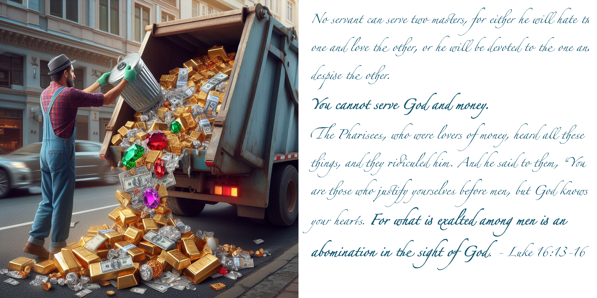

Theme of Treasures
Published on 2024-05-26

In addition to discussing the theme of treasures in the books that constitute the Pillars of Wisdom, this article also sums things up. It derives a few insights from all seven themes, especially why Jesus is specially associated with two of the Spirits of God, the Spirits of Wisdom and Knowledge.
Treasures
Early in my Christian walk it was the desire to know what are the treasures in Heaven that animated my search for wisdom. My craving for such treasure was kindled by Jesus’ words in the Sermon on the Mount. When I began to uncover them, I learned that treasuring the things God treasures is synonymous with worship. Doing the opposite is idolatry. That is treasuring the impermanent or the unclean. This connection to worship makes more sense now that I know that the Spirit of Understanding is the spirit of worship. This tension between true and false worship expressed as true and false treasure is made repeatedly in the books that constitute the Pillars of Wisdom.
Treasures in Psalms
The first stop on this treasure hunt is Psalm 115.
Their idols are silver and gold,
the work of human hands.
[A] They have mouths, but do not speak;
[B] eyes, but do not see.
[C] They have ears, but do not hear;
[D] noses, but do not smell.
[E] They have hands, but do not feel;
[F] feet, but do not walk;
[G] and they do not make a sound in their throat.
Those who make them become like them;
so do all who trust in them.
- Psalm 115:4-8
Like Ecclesiastes 12 and the words of the prophets, this psalm lists for us the ill effects of idolatry. The idols cannot do things like see and hear and so idol worshipers become like the things they worship! Sometimes it is the virtues that are compared to silver and gold, but not here. If you consider that leprosy can cause loss of smell (and even loss of the nose itself ), then the above lists conditions all of which Jesus healed: the mute, the blind, the deaf, lepers, those with withered hands and the lame. Since speaking is twice disabled, it is likely that one is a physical disability while the other is a mental one.
The LORD appears twelve times in this Psalm. Thus, this key Psalm about treasure also points to Psalms as the Book about "The LORD” or accepting the Spirit of Lordship. To demonstrate our respect of His authority, we are exhorted to trust in the LORD, fear the LORD, extol or bless the LORD and praise the Lord.
Treasures in Job
Job is the pillar associated with the spirit of Wisdom as well as the suffering of plowing. In chapter 28, a hymn about searching for wisdom compares that quest to the human search for precious metals and stones. The numbering of the treasures here is added for clarity.
“Surely there is a mine for (1) silver,
and a place for (2) gold that they refine.
(3) Iron is taken out of the earth,
and (4) copper is smelted from the ore.
Man puts an end to darkness
and searches out to the farthest limit
the ore in gloom and deep darkness.
He opens shafts in a valley away from where anyone lives;
they are forgotten by travelers;
they hang in the air, far away from mankind;
they swing to and fro.
As for the earth, out of it comes bread,
but underneath it is turned up as by fire.
Its stones are the place of (5) sapphires (or lapis lazuli),
and it has (6) dust of gold.
“That path no bird of prey knows,
and the falcon's eye has not seen it.
The proud beasts have not trodden it;
the lion has not passed over it.
“Man puts his hand to the flinty rock
and overturns mountains by the roots.
He cuts out channels in the rocks,
and his eye sees (7) every precious thing.
- Job 28:1-10
Seven precious materials are named (with the last being the generic “every precious thing”). Gold appears twice. The first mention of gold is in position two, which is Job’s position in the harvest pattern and matches the Spirit of Wisdom. Gold refined points to suffering. The second mention of gold is in position six and matches the Spirit of Knowledge. Together gold matches wisdom and knowledge. This is another instance where the treasures of Colossians are singled out, for “in Christ are hidden all the treasures of wisdom and knowledge”.
The treasures can dazzle us so much that we miss other details. Interspersed between references to treasures are other images that are given in a special order: light, rope, food, the bird of prey, the falcon, proud beasts, and the lion. If you look closely, these images are references to Job 39-41 given in reverse order.
- Man “puts an end to darkness” by bringing light, which matches chapter 41 where Leviathan snorts fire and has glowing eyes
- People “hang in the air” and “sway to and fro” by using a rope, which matches chapter 41, where a rope leash is suggested as useless to bind Leviathan
- “the earth, out of it comes bread” matches the food offered as tribute in chapter 40 to Behemoth
- The bird of prey matches the eagle of chapter 39
- The falcon matches the hawk of chapter 39
- The proud beasts match chapter 39’s menagerie of donkey, ostrich and horse
- Lastly, the lion appears in chapter 38
In Job Rises, I observed that Elihu’s speech formed a chiasm with God’s, with the key themes given in opposite orders. This chiasm between Job’s speech and God’s I overlooked. It is not the themes that are reversed but something else. It is the journey. In God’s speech, the Almighty descends from heaven to the sky with its birds, to the land with its beasts, then to the battlefield to face Behemoth, who guards the gateway to the grave. Finally, God descends to Hell to face Leviathan and bring judgment and justice. That is God’s journey. It is not ours.
In his poem in Job 28, Job describes our journey, and it is glorious. All those years spent dissecting Job and I missed this! Job is describing the rapture of the church!
- What light shall “put an end to darkness”? It is the glory of Christ’s coming, for he is the Way and the Truth and the Light.
- Who are the people who “hang in the air”? They are the blessed Christians who never die, who rise to meet the Lord in the air at the blowing of the last trumpet on the day he returns.
- What is the bread that comes out of the earth? Those are the righteous dead who will be resurrected into glorious bodies to join the others in the air.
- What is “it” that resides “underneath [and] is turned up as by fire” (ESV)? The NIV might be more helpful here, as it says, “transformed below as by fire”. If it said “destroyed” I would think of the judgment of Hell. Instead, this makes me think of our being purged of sin following death when “we shall be changed” as Paul says in 1 Corinthians. Whether this change is instantaneous, as many Protestants believe, or after a lengthy stay in Purgatory, as Catholics and some others do, I cannot say.
- What of the bird of prey and the falcon? That reference is less certain, but it seems to indicate that the raptured and resurrected will fly with Christ to the battlefield to witness his great victory over the proud beasts of the earth.
- Who then is the lion? Satan is called by Peter a prowling lion, seeking people to devour. Jesus is called the Lion of Judah. These two lions shall meet and only one walk away. That signifies Christ’s final victory and capture of the earth from Satan and his followers.
Job 28 says that no one knows the way to where wisdom may be found. Then it goes and illustrates the day when the church finds the way and follows it to heaven. The way is Jesus.
Treasures in Proverbs
Comparing wisdom to treasure is a central theme in Proverbs. It is particularly strong in Proverbs 3:13-18 and Proverbs 8:10-19. The latter passage repeats an emphasis we have seen before, also with seven treasures.
Take my instruction instead of silver,
and knowledge rather than choice gold,
for wisdom is better than jewels,
and all that you may desire cannot compare with her.
...
Riches and honor are with me,
enduring wealth and righteousness.
My fruit is better than gold, even fine gold,
and my yield than choice silver.
- Proverbs 8:10-11,18-19
Again, we see gold in second and sixth position. Now it is “choice gold” and “gold, even fine gold”. Once more, Jesus’ possession of wisdom (the second spirit) and knowledge (the sixth) is trumpeted, just as it was in Job, Song of Songs and Colossians. Note also that the sixth treasure comparison speaks of “My fruit”, signifying the harvest, the sixth phase of the Harvest Pattern.
Treasures in Song of Songs
Dividing the book into seven parts, each with four consecutive speeches, allows us to match the seven spirits of God. Each section also has one or more references to treasure.
1:1. 1:11. 2:2. 5:1. 5:10. 6:11. 8:8.
- Ornaments and a string of jewels are in 1:10. In 1:4-5, references to King and Solomon indicate Lordship.
- In SS 1:11, earrings of gold with silver studs indicate the spirit of Wisdom. Gold emphasizes this spirit, because it is one of the two treasures associated with Jesus in Colossians 2. Myrrh in 1:13 symbolizes Christ’s suffering in this plowing phase.
- In SS 2:3, "sit in his shade" has the Bride putting herself in a receptive position, "standing under". The reference to firstfruits (a Jewish religious festival) connects the passage to worship, hence the spirit of Understanding. This section includes verses 3:6,10, which have silver but also gold, frankincense and myrrh, the items brought by the three wise men when they went to worship baby Jesus.
- In SS 5:1-9 there is going back and forth about being patient about love. SHE is offering her friends Counsel. Myrrh appears three times in this section, in 5:1,5. How sweet the aroma of wise counsel!
In 5:10-6:10, SHE describes the appearance of her Beloved. Giving only the precious items, there are seven:
- finest gold
- myrrh
- rods of gold
- jewels (or topaz)
- polished ivory
- sapphires (or lapis lazuli)
- alabaster (or marble) pillars on bases of gold
The Bride says of these qualities that "they overwhelm me". SHE is overawed by his Might. The analogies to parts of her lover’s body given in this passage are eight, but the hair, eyes and cheeks are not matched to precious things, but instead doves, milk, spices, and the like. The description goes from head to toe, in a linear sequence. The mention of raven, dove, and streams of water suggests the flood of Noah, a time when God displayed his might.
Given other arrangements of treasures where gold was used to mark the second and sixth of a series, this passage baffled me. Also, the count of body parts and treasures differ. Which details were significant in defining the number and structure? Only when I reflected on another Bible prophecy with a head of gold did I find a possible interpretation. In Daniel is found a dream of a statue with a head of gold, shoulders and chest of silver, belly and thighs of bronze, and legs of iron. Each metal stood for a different empire. The progression from most to least precious showed a steady decline in quality from the first empire to the last. Not so in this picture. The head is gold. The arms are gold. The legs are gold. And the chest? Sapphire or lapis lazuli, symbolizing God’s Law, his Word. The lover is precious from top to bottom and inside his jeweled chest, his heart is filled with God’s Word. So, what does this all mean? Jesus, the eternal Word, is our treasure and he also treasures within his own heart the same eternal Word.
- In the sixth section, 6:11-8:7, we see jewels, ivory, crowns & wealth. The intimate details show that the lovers know each other. Thus, this speaks of Knowledge. In reflecting upon this section, I pondered whether there was some common feature to set off the second and six sections and so highlight wisdom and knowledge. There is. It is the crown. Song of Songs 3:11 uses the word crown three times. This reminds me of the old hymn “Crown him with many crowns”. Then this section has these marvelous words:
Your head crowns you like Mount Carmel.
Your hair is like royal tapestry;
the king is held captive by its tresses.
- Song of Songs 7:5
This is the Lover speaking of his Bride. What knowledge can be greater than the Lord telling us, his church, that we shall reign with him!
- In 8:8 to the end, the talk is about who is entitled to how much of the produce from the vineyard. SHE promises not the required rent from her vineyard to her lover and king, but her entire income (apart from the worker's share). This demonstrates total surrender and reverence, thus The Fear of the Lord.
As a final word on Song of Songs, I offer God my apologies. Of all the books in the Bible, I have read this book the least often and until this year, studied it the least. Many people ask why it is even in the Bible. It stands apart. As a parable and prophecy, it is the most subtle of all works, defying the efforts of many people to find any spiritual value besides, “You should wait to get married.” I know enough now to conclude that I barely know anything about its message, but at least I now know that it has a message.
Treasures in Ecclesiastes
In the pages of this book, the Teacher is not content to merely decorate his poetry with metaphors to treasures. He fairly shouts the connection between each treasure and the seven spirits of Wisdom.
- Ecclesiastes 1:1-2:11. Here Solomon demonstrates that he is in control. He is the lord of his kingdom, to the point of boasting about owning slaves, a treasure of which no one should boast. A further indication is given in this verse: “I also gathered for myself silver and gold and the treasure of kings and provinces.” (Ecclesiastes 2:8a) Consequently, this first section is animated by the spirit of Lordship.
- Ecclesiastes 2:12-2:21. Solomon next turns to the spirit of Wisdom.
“So I turned to consider wisdom and madness and folly…
So I turned about and gave my heart up to despair
over all the toil of my labors under the sun,
because sometimes a person who has toiled
with wisdom and knowledge and skill must leave
everything to be enjoyed by someone who did not
toil for it. This also is vanity and a great evil.
- (2:12,20-21)
The first treasure mentioned here is implicit. It is the “everything” that Solomon laments he must leave to those who did not toil for it. Everything includes all his material treasures. If only he esteemed the second treasure more! Wisdom and knowledge are joined again, marking the treasures of the second and sixth spirits as special.
- Ecclesiastes 2:22-4:6. This section is graced by the poem about the times. The words that follow that poem are about the worshipful heart, hence are animated by the spirit of Understanding.
For to the one who pleases him God has given wisdom
and knowledge and joy.
- Ecclesiastes 2:26a
...
He has made everything beautiful in its time.
Also, he has put eternity into man's heart,
yet so that he cannot find out what God
has done from the beginning to the end.
...
I perceived that whatever God does endures forever;
nothing can be added to it, nor anything taken from it.
God has done it, so that people fear before him.
That which is, already has been;
that which is to be, already has been;
and God seeks what has been driven away.
- Ecclesiastes 3:11,14-15
Note that verse 2:26 speaks of “wisdom and knowledge”. Once again, we see the pairing from Colossians, the two treasures most closely identified with Jesus. I would consider it pure joy to leave such treasure to those who follow me. Verse 2:26 continues with words about the “business of gathering and collecting”. This focuses our attention not on the treasures themselves, but on the labor and skill that goes into acquiring them. The section ends in 4:5 by addressing the poison fermented within our craving for treasure: envy.
- Ecclesiastes 4:7-5:20. A summary of the fourth section would be, “Don't go it alone.” Seeing the word “advice” in verse 4:13 tells us that this is surely the spirit of Counsel.
Two are better than one...
a threefold cord is not quickly broken.
- Ecclesiastes 4:9-12
Better was a poor and wise youth
than an old and foolish king
who no longer knew how to take advice.
- Ecclesiastes 4:13
Solomon continues by giving advice about wealth and riches in 5:8-20. They are about not embracing (worshiping) money. His only positive statement about lasting treasure is to clarify its source: God’s grace, not our human effort.
Everyone also to whom God has given
wealth and possessions and power to enjoy them,
and to accept his lot and rejoice in his toil—
this is the gift of God.
(5:19)
- Ecclesiastes 6:1-8:14. The fifth section (in 6:1-2) describes the paradox of possessing but not enjoying one’s possessions. The trials deepen in chapter 7:2,4, which announces the House of Mourning. Which is worse, not enjoying what we have or losing it altogether and being forced to mourn the loss?
If we suffer loss, it may because someone stronger than us took what belongs to us, as with Job whose possessions were carried off by bands of thieves. That cause is addressed in this section from multiple angles.
Whatever has come to be has already been named,
and it is known what man is, and that he is
not able to dispute with one stronger than he.
(6:10)
...
For the protection of wisdom is like the
protection of money, and the advantage of knowledge
is that wisdom preserves the life of him who has it.
(7:12)
...
Wisdom gives strength to the wise man more than
ten rulers who are in a city.
(7:19)
...
No man has power to retain the spirit,
or power over the day of death.
(8:8)
What do all the above verses have in common? They are about our need for the spirit of Might.
- Ecclesiastes 8:15-9:8. In this section we come to the spirit of Knowledge.
For the living know that they will die,
but the dead know nothing,
and they have no more reward,
for the memory of them is forgotten.
(9:5)
...
Whatever your hand finds to do,
do it with your might,
for there is no work or thought or
knowledge or wisdom in Sheol,
to which you are going.
(9:10)
The pairing of wisdom and knowledge shows here as it did in two previous sections of Ecclesiastes. Christ’s greatest wisdom was that he knew he would die and yet obtain a great reward, an inestimable treasure. Though Jesus had what we lack – the power to escape death – he knew that his death would set the world free from death and – contrary to Solomon’s words – the memory of this would never be forgotten. On another point Solomon was only partly correct. There WAS no thought or knowledge or wisdom in Sheol. That ended the day that Christ descended into the grave and brough God’s thoughts with him. He brought the knowledge of how to save sinners and the wisdom to rejoice when anyone else would mourn, for it is written:
“and let us run with endurance the race that is
set before us, looking to Jesus, the founder and
perfecter of our faith, who for the joy that
was set before him endured the cross,
despising the shame, and is seated at the
right hand of the throne of God.”
- Hebrews 12:1-2 ESV
- Ecclesiastes 9:9-12:14. These words speak of the end, of when we die. Concluding as it does with the dictum, “Fear God and keep his commandments”, this section belongs to the spirit of the Fear of the Lord. Solomon’s words drip with irony when he speaks about the magical power of mankind’s greatest treasure: money.
“Bread is made for laughter,
and wine gladdens life,
and money answers everything.”
(10:19)
What we treasure and what God treasures are poles apart. God does not mourn the loss of money or its equivalents. He shows His valuation in the last chapter:
“before the silver cord is snapped,
or the golden bowl is broken…”
(12:6)
The silver that is silver and the gold that is gold is the life of His children. In Song of Songs, the Lover is compared to gold. According to the Teacher, in such terms does our Creator also think of us.
If you look for a progression in Ecclesiastes, a change in how Solomon regards material wealth, you will find it. He first possesses it, then fears losing it, then discovers he lacks the grace to enjoy it or strength to hold onto it. In the end, two things become more precious to him than money: human life and time.
Treasures in Matthew
Jesus’ words in the Gospel of Matthew were the impetus for my entire search for the spiritual treasures. To discover the importance of the metaphor of treasure in Matthew, I counted words like gold, silver, money, talents, treasure, frankincense, myrrh, riches, coin, denarius and pearl and put them in a histogram. Then I appraised the strength and length of passages that deal with wealth, anxiety, and goals of the heart to find places where the importance of treasure was underestimated by mere word counts. After that, I summarized the counts by the harvest pattern and growth pattern phases.
To interpret the results, we must decide whether the growth pattern or the harvest pattern is dominant. This raises the question of how to weigh the two patterns in each of the seven pillars.
- In Psalms, the overall structure is unclear. This book (Peace, like Solomon Never Knew) has restricted itself to critical subsets. The historical psalms encase a growth pattern but their larger structure is the harvest. Other Psalms, like Psalm 23, are solely patterned after the harvest.
- In Job, the growth pattern only appears in the latter twenty-eight chapters. The whole of the book is governed by the harvest pattern.
- In Proverbs, Song of Songs, and Ecclesiastes – all written by Solomon – the growth pattern is the dominant pattern structuring each book.
- Matthew is chaptered according to the growth pattern, yet contains at least seventeen instances of the harvest pattern, making that its major one.
- Revelation is subtle. The order in which I discovered the patterns in Revelation may not be decisive, but it informs my assessment. First, I spotted the seven thunders, then was able to split the book by the thunders into a harvest pattern. Only after that pattern was clear did the growth pattern come into focus. Conversely, after those discoveries, I noted that the seven signs in the Gospel of John form a chiasm with Revelation. The structure they reveal matches the growth pattern clearly but the harvest less distinctly. Taken altogether, the themes of growth and harvest are blended so well, I cannot choose a dominant one. Revelation describes the end of time, the completion of all growth and the final harvest.
(NOTE: When I wrote Plague, Precept, Prophet, Peace, I discovered and disclosed much more of the structure of Psalms.)
From the above, it seems that three pillars emphasize the harvest, three growth, and one blends them seamlessly. Matthew, however, has the clearest focus, so to the harvest pattern we turn. By this standard, two phases of the harvest pattern deal with treasures more than the others: the second (plowing) and sixth (producing). This matches the other books, which pointed to the second and sixth spirits of God, Wisdom and Knowledge. These link to the two comings of Christ, as suffering servant and as conquering Lord of the Harvest.
How decisive is the analysis? The sixth section has as many mentions of treasure words (twenty-seven) as the rest of the gospel! And the second section holds the Sermon on the Mount, where all who search for spiritual treasure find their first clue, to “lay up for yourselves treasures in heaven”. Even so, every section has at least one mention of treasure, and none are insignificant.
- The gifts of the Magi are an act of worship that respects the lordship of Jesus Christ.
- Christ’s temptation in the wilderness shows that material wealth and power is not the animating force in his heart. Then the Sermon on the Mount begins with the Beatitudes, where the poor in spirit and those who mourn are promised something better than riches. Jesus hits his stride by proposing to conquer anxiety not with riches, but with faith. We rightly call the heart of this message “The Golden Rule”, a gem among his teachings. The key thing to note is that all references to riches in this section concern people who don’t have them, just like Job. The poor, mournful and anxious, who fear for food, clothes and shelter, are told how to build a strong house and fill it with good things.
- When Jesus prepared his disciples to go on their first missionary journey, he told them to leave seven treasures behind:
“Do not get any
(1) gold or
(2) silver or
(3) copper to take with you in your belts –
(4) no bag for the journey or
(5) extra shirt or
(6) sandals or a
(7) staff,
for the worker is worth his keep.
- Matthew 10:9-10
The fact that the number of things to leave behind is seven signifies total dependence upon God’s provision, though assigning each item a spiritual meaning is currently beyond me. Jesus is at his best as a teacher, providing a succinct message for his disciples to share. Their obedience shows they possess understanding, insomuch as they are “standing under” Jesus in obedience to his teachings and authority.
- Pouring and the Spirit of Counsel. After the second and sixth sections, this one has the most references to treasure. The heart attitude of what people treasure is in focus. Jesus says in 12:11-14 that people are more important than sheep (possessions). He speaks in 12:29 of the binding of the strong man so that you can plunder his possessions. He says in 12:34-35 that, “out of the abundance of the heart the mouth speaks. The good person out of his good treasure brings forth good, and the evil person out of his evil treasure brings forth evil.” The deceitfulness of riches is then associated with one of the unfruitful soils in 13:22. Next, in 13:44-46, Jesus uses the parables of the treasure hidden in the field and the pearl of great price to show the lengths people will go to in pursuit of their heart’s desire. With the parable of the net speaking of the final judgment, Jesus ties all of this to the counsel of the prophets, which is a warning to turn away from evil. However, in Matthew 13:53-58, many people reject Jesus’ teachings. Conspicuously, they acknowledge his wisdom (the planting phase) and his mighty works (the pruning phase) but reject him because of unbelief (the watering phase). They reject his counsel. Jesus in 13:52 “[brought] out of his treasure what is new and what is old.” The old was okay; they could not accept the new. This section ends with a dark sentence: “And he did not do many mighty works there, because of their unbelief.” (Matthew 13:58) The key word is “mighty”, because the spirit of Might awaits the next section.
- Plucking and the Spirit of Might. This section has two parables concerning treasure, the search for a lost sheep and the parable of the unforgiving servant. If being locked up in prison until you pay your debts is not a picture of God exercising his might in pursuit of discipline, nothing is.
Producing and the Spirit of Knowledge. In ten stories drawn from Matthew 19-25, whether parables, woes, or other forms, Jesus addresses our use and misuse of treasure. The spirit of Knowledge gets down to the implementation details of life, so these stories address many facets of how our attitude toward money and possessions corrupts our judgment.
- Rich young ruler. Material treasure becomes spiritual treasure when we give it to the poor. It is better to lack money than to lack generosity.
- Parable of the Laborers in the Vineyard. How much is my labor worth?
- Cleansing the Temple. Prayer is of greater value than the coin of the money changers.
- Parable of the Murderous Tenants. The tenants valued their plot of land and its crops more than the life of the master and his son.
- Paying taxes to Caesar. In our minds there is a conflict between our financial obligations to God and to country. We can use what we view as an insoluble problem as an excuse to neglect one or the other duty. Jesus can lead us to the proper resolution of this tension.
- A Woe concerning oaths. Oaths to God involving money were viewed as more important than other types of oaths. “Woe to you, blind guides, who say, If anyone swears by the temple, it is nothing, but if anyone swears by the gold of the temple, he is bound by his oath.” (Matthew 23:16 ESV) That means that money was viewed as more important, too.
- The Faithful and Wise Servant. Wicked servants mistreat those put under their charge. Faithful servants show mercy and fairness in how they manage God’s people and liberally provide food and other resources to sustain them. Merciful stewardship is more to be prized than the privileges of leadership.
- Parable of the Ten Virgins. The five foolish virgins are urged to rush to the merchants to purchase oil but do not make it back to the wedding in time. Their money – their material treasure – cannot gain them admittance to the wedding celebration. It seems that the real treasure was time, and theirs ran out.
- Parable of the Talents. For excuses, the unprofitable servant cited fear and charged the master with unfairness. Thus, he lacked two more treasures: courage and faith.
- Prophecy of the Sheep and Goats. In the final tale, people are judged on whether they use their treasure to help the poor, the sick, the oppressed, and the prisoners. Mercy is the final treasure to be lauded here. We show that we possess that mercy when we make our neighbors our treasures, thus fulfilling the Golden Rule.
Giving, working, praying, religious vows, loyalty, authority, stewardship, preparedness, mercy… money touches on every aspect of our religion. These stories tie Matthew to the other pillars. For example, the Rich Young Ruler could have gotten the same advice from Proverbs:
“Whoever gives to the poor will not want,
but he who hides his eyes will get many a curse.”
- Proverbs 28:27 (ESV)
As for making wise oaths, the Scribes and Pharisees could have benefitted from Ecclesiastes 5. Don’t forget the foolish virgins, either. They should have imitated the industriousness of the “daughters of Jerusalem” who helped prepare the palanquin and other wedding decorations in Song of Songs. Lastly, any modern unprofitable servants can read Revelation to see the glorious reward in store for all who believe. Our master is not fair – he is generous, giving us more than we ask for or can imagine.
- There are only three treasures in this final section: the temple silver, the money paid to the tomb guards, and one other. What was Judas’ treasure? Thirty pieces of silver for a betrayal. What did that same silver become to the temple officials after Judas discarded it? Their greed made them experts at money laundering, converting blood money into real estate and treachery into charity. The guards took a bribe to lie that they were outsmarted by body snatchers. Disloyalty, greed, jealousy, power and deception. Tarnished silver and hush money are humanity’s treasure. The real treasure was the body and blood of Jesus, our souls’ ransom. Sadly, the spirit of the Fear of the Lord is not found in these acts. Judas became afraid, but instead of repenting, took his own life. The Jewish leaders were afraid, but of Rome, not the Father, so they surrendered Caesar’s rival. The soldiers were afraid of being executed by men, not cast into Hell by God. Jesus, however, filled with holy fear, lay down his life in obedience. This sacrifice by a suffering servant finds its closest analog among all the Pillars of Wisdom in the sufferings of Job and the account of Leviathan in Job 41. That connection binds the second pillar to the sixth more than all the whispers found in patterns previously described involving gold or crowns.
Treasures in Revelation
We come now to the last of the clues that identify the Seven Pillars of Wisdom. Revelation is too full of treasure to perform a complete analysis here. We shall focus on the sections with the least, most, and last mentions of treasure. As before, Revelation is divided into pieces by thunder.
- The Least: Section 2, Chapters 6 & 7, spirit of Wisdom. Like the other pillars of wisdom, the second section stands apart as special, having the fewest mentions of treasure. Recall how Job corresponds to the second spirit of Wisdom and represents plowing, mourning, persecution and loss. Also recall how the second section of Matthew speaks to the poor in spirit, the mournful, the persecuted and people anxious for food and clothes. This section shares the same spirit. Chapter seven has no references to treasure; it has the Great Tribulation. Chapter six has only three references to treasure, but in each case negates that treasure by lamenting its scarcity. “And I heard what seemed to be a voice in the midst of the four living creatures, saying, 'A quart of wheat for a denarius, and three quarts of barley for a denarius, and do not harm the oil and wine!' ” (Revelation 6:6 ESV) This chapter speaks of scarcity, not plenty. It also speaks of persecution (6:9-11). The only mention of the rich is to describe how they go into hiding (in 6:15).
- The Most: Section 6, Chapters 16-18, spirit of Knowledge. Knowledge is about knowing the details of how complex systems function and are maintained. Here the economic system is in view:
lading of gold, and silver, and precious stone,
and pearl, and fine linen, and purple, and silk,
and scarlet, and all thyne wood, and every vessel of ivory,
and every vessel of most precious wood,
and brass, and iron, and marble, and cinnamon,
and odours, and ointment, and frankincense,
and wine, and oil, and fine flour, and wheat,
and cattle, and sheep, and of horses, and of chariots,
and of bodies and souls of men.
- Revelation 18:12-13, YLT
A wise person said in Proverbs something that ties together the second and sixth spirits:
Two things I ask of you;
deny them not to me before I die:
Remove far from me falsehood and lying;
give me neither poverty nor riches;
feed me with the food that is needful for me,
lest I be full and deny you and say,
“Who is the LORD?”
or lest I be poor and steal and
profane the name of my God.
- Proverbs 30:7-9
The spirit of wisdom is what we need to master poverty.
The spirit of knowledge is what we need to master riches – and not be mastered by them.
Jesus mastered poverty during his first coming. When he returns, he shall distribute all the wealth of heaven to his children.
- The Last: Section 7, Chapter 19-22, spirit of the Fear of the Lord. The last section of Revelation has the second greatest number of references to treasure, though none are found in chapter twenty (about judgment) or twenty-two. The beauty of the new Jerusalem is described in terms of precious gems and gold, but it is the treasure-free chapter twenty-two that has the best word of all:
The Spirit and the bride say, “Come!”
And let the one who hears say,
“Come!” Let the one who is thirsty come;
and let the one who wishes take the
free gift of the water of life.
- Revelation 22:17, NIV
Free! The water of life is free! That is the end to all treasure, because all will be treasured, all free, and all need for comparison, for calculation, for acquiring, saving, and spending will be gone.
Isaiah put it best.
O afflicted one, storm-tossed and not comforted,
behold, I will set your stones in antimony,
and lay your foundations with sapphires.
I will make your pinnacles of agate,
your gates of carbuncles,
and all your wall of precious stones.
All your children shall be taught by the LORD,
and great shall be the peace of your children.
- Isaiah 54:11-13 ESV
The prophet lists seven treasures, but the two most precious are the two he lists last: children and peace. With all that we have seen, it is finally possible to identify the seven treasures in Job 28, if we draw on several of the pillars, thus tying them all together:
- Silver is the Lord, because Jesus our Lord was sold for thirty pieces of silver in Matthew.
- Gold is Wisdom, because the Lover in Song of Songs is described as gold, from head to toe, and Daniel in his prophecies links the head of gold to wisdom. “How much better to get wisdom than gold!” (Proverbs 16:16a)
- Iron is Understanding, because it was the Iron empire, Rome, that God placed under the control of his church. And in Proverbs we have this gem: “Iron sharpens iron, and one man sharpens another.” (Proverbs 27:17 ESV) Many times in Revelation, Psalms and other places is iron associated with forced submission, because the wicked refuse the voluntary worship that flows from understanding.
- Copper is Counsel, because of Solomon’s bronze pillars, Jachin and Boaz, and his authorship of Proverbs, which names and numbers the Pillars of Wisdom. (Bronze is copper alloyed with tin.)
- Lapis Lazuli is Might, because it was Issachar's stone, and Issachar is a strong donkey, lying down between the sheepfolds (Genesis 49:14). Also, the Ten Commandments may have been carved in Lapis Lazuli, God's mighty throne rests upon lapis lazuli, and Isaiah 54:11-13 says that the foundations of the new Jerusalem will be made from this stone. The chest is also the part of the body associated with strength with all its muscles and the heart that beats there, and in Song of Songs, the chest of the Lover is described as decorated with Lapis Lazuli.
- Gold dust is Knowledge, for Job 22:22-25 and Isaiah 54 treasure 6 compare gold to being “taught by the Lord”. As for Proverbs, it says, “Take my instruction instead of silver, and knowledge rather than choice gold.” (Proverbs 8:10 ESV)
- All its treasures / Every precious treasure. This must match the Fear of the Lord, because the end of Revelation has the most glorious listing of treasure and Proverbs, Ecclesiastes, Psalms and all the prophets agree that the Fear of the Lord is the primary cause that leads to every good thing.
So What?
That is all. The Seven Pillars of Wisdom have been named, interconnections followed, and their separate purposes explained. As parts they have been arranged into a harmonious whole: the harvest pattern. So what? When I was a management consultant, they drilled that two-word question into us. By the end of every business proposal, email, or slide deck you must answer that question. Why did you waste my time? How does this help me further my goals?
This is not a management consulting proposal. It is a reflection on wisdom. My advice is to begin processing the information presented here the same way I began in 1987, the year before the one I devoted to studying the books of wisdom. I was taking a class on the Bible at MIT taught by an atheist. For my final paper, I was to compare and contrast the gospels of Matthew and John. My only technique was to read each gospel multiple times until the differences surfaced in my mind. I didn’t know it at the time, but that was my introduction to the Pillars of Wisdom. I believe that those days of meditating on Matthew and John deepened the thirst for wisdom already present in my soul. That thirst caused me to turn to the books of wisdom the following year.
Thus in 1988, I read Proverbs over and over for six months, before branching to the other wisdom books for the remainder of the year. At first, I struggled to understand the meaning of many of the Proverbs. Then I lamented how I was not living in accord with those instructions. I tried to act wise, but often failed. Had I stopped there, I would have failed at everything. Instead, I made Proverbs into my prayer journal. I asked the Lord to make me into the kind of person described in its pages. Had I stopped there, it would have been beneficial, but the Holy Spirit was generous. Many people turn to the Psalms when they want to worship God; I learned to worship God from the pages of Proverbs. Surely the only good and wise and generous and courageous person whose character and conduct completely match that described in Proverbs is Jesus. By meditating on those words, I was meditating on Jesus. Do likewise. My time in Proverbs deepened my worship of God immeasurably.
This suggests important questions. Why did my time of learning so much about the wisdom books align with God’s desire to reveal so many mysteries that had remained hidden for millennia?
Questions about God’s Time
A careful, studious, critical Berean Christian has the right and obligation to ask for a Biblical justification that God not only hid such mysteries for so long but intended to reveal them now. In all the years it took to prepare this volume, I never uttered this question out loud because I lacked the answer. A writer should never pose a vital question in their book that they cannot answer. Months after my initial online publication of this book, nagging questions remained, some addressed in this appendix. When I had all seven categories of clues laid out before me, I tried to discern how to summarize my findings. What critical questions can they answer?
Did the Bible prophesy when the parables about time in Ecclesiastes would be unsealed?
How do you avoid the implication of Jesus’ denial of knowledge in Matthew? “But concerning that day and hour no one knows, not even the angels of heaven, nor the Son, but the Father only.” (Matthew 24:36 ESV)
What purpose was served by marking the second and sixth treasures as belonging specially to Jesus?
As narrow as the third question seems, that one led to answers for the other two. Throughout this book, Jesus has been associated with the number two, the Father with the number three, and the Holy Spirit with the number seven. So, Jesus is assigned the second and sixth treasures to point to the second and sixth pillars – Job and Matthew. This makes sense because Job is about the suffering servant, the plan of salvation and the savior’s eventual suffering on the cross, while Matthew is a gospel, hence explicitly devoted to Jesus.
What pillars belong to the Father? The logical answer is that the third, fourth and fifth pillars belong to the Father: Proverbs, Song of Songs and Ecclesiastes. All three were written by Solomon (with some assistance by Hezekiah and others). Solomon’s tone was that of a father teaching his son. His natural son did not become wise, but Jesus, his spiritual son, practiced all that wise Solomon had to teach. Also, those three pillars are the ones whose primary structure is the Growth Pattern of twenty-eight times, not the Harvest Pattern. They fit together.
The Holy Spirit infuses all seven pillars. By process of elimination, though, it has a special connection to Psalms and Revelation. Psalms connects the heart to worship while Revelation is the place that numbers the Seven Spirits of God.
This trinitarian division of the pillars gives us a partial answer to the second question. Jesus said that the timing of his return and of many other events prophesied in scripture is known only to the Father. If the books of Proverbs, Song of Songs and Ecclesiastes are pillars devoted to the Father and they are prophetic, what shall we conclude? This part of the Bible contains a detailed schedule of events. The Father’s pillars contain the Father’s wisdom concerning time. That wisdom is encoded, sealed off from our understanding until the proper time. This is how Jesus can be correct about not knowing the timing of certain events, yet that timing is still present in Scripture, awaiting a day when those words shall be unsealed for us to understand. Jesus says that only the Father knows and the Bible contains parts that speak in the Father’s voice.
That brings us to the first question. Have we reached that proper time? Is this the season in which God the Father begins to unlock the temporal mysteries hidden in His Word? If so, has He predicted this unveiling in His Word?
Yes!
The chapter “Swords, Seals and Surviving to Saturday” in Peace, like Solomon Never Knew dug into the opening of the seven seals of the Lamb’s scroll. The emphasis was on the nature of each seal – what obstacle was removed – and on matching the actual historical events that followed that opening to the riddles given in Revelation. With all that focus on action, we missed part of the message. After all, it was a scroll being unsealed. What was written on that scroll?
Matching the seven seals to the Seven Pillars of Wisdom gives the answer. With the breaking of each seal on the scroll, another part of the Bible was also unsealed. Words that the church had either misunderstood or been completely baffled by were clarified. It is these words that propel the church forward amid the chaos spoken of in Revelation’s curses. Here is that concordance.
First Seal: And I looked, and behold, a white horse! And its rider had a bow, and a crown was given to him, and he came out conquering, and to conquer. (Revelation 6:2, ESV)
First Pillar: Psalms. There are nine references to “bows” in Psalms, more than any other Bible book. Two are in Psalm 78, the first historical Psalm, which announces a great riddle.
“I will open my mouth in a parable;
I will utter dark sayings from of old,
things that we have heard and known,
that our fathers have told us.”
- Psalms 78:2-3 ESV
Unsealed: What was unsealed was the Bible itself. A bow is a means of firing projectiles long distances. By his new printing press, Gutenberg began the mass production of God’s Word and fired its flaming arrows into the world as never before. Psalm 119, longest chapter in the Bible, extols God’s Word and urges all people to study it daily. At last, this possibility became a reality for great numbers of people.
Second Seal: And out came another horse, bright red. Its rider was permitted to take peace from the earth, so that people should slay one another, and he was given a great sword. (Revelation 6:4 ESV)
Second Pillar: Job. Among the seven pillars, only Psalms has more references to swords than Job. Crucially, the core of the book is a heated debate among religious people, with the three friends ganging up on poor Job. Major revelations in Job include salvation by grace through faith and the sovereignty of God.
Unsealed: The opening of this seal prompted the Protestant Reformation and led to the wars of religion and the General Crisis. Religious people fought each other, just as in Job, except with rifles, cannon and cavalry. John Calvin preached over 150 sermons on Job and appealed to the view of God’s sovereignty in Job for his defense of predestination and the assurance of salvation. The true sword was the word of God.
Third Seal: And I looked, and behold, a black horse! And its rider had a pair of scales in his hand. And I heard what seemed to be a voice in the midst of the four living creatures, saying, “A quart of wheat for a denarius, and three quarts of barley for a denarius, and do not harm the oil and wine!” - Revelation 6:5b-6 ESV
Third Pillar: Proverbs. This pillar has three mentions of scales used for weighing things (as opposed to fish scales). This is the most mentions of scales of any pillar. Proverbs has a lot to say about honesty and integrity in business dealings.
Unsealed: The industrial revolution, anti-slavery and labor movements redefined the world of work. Reforms in the justice systems (often symbolized by Lady Justice holding a pair of scales) of many countries also occurred.
Fourth Seal: When he opened the fourth seal, I heard the voice of the fourth living creature say, “Come!”And I looked, and behold, a pale horse! And its rider's name was Death, and Hades followed him. And they were given authority over a fourth of the earth, to kill with sword and with famine and with pestilence and by wild beasts of the earth. (Revelation 6:7-8 ESV)
Fourth Pillar: Song of Songs. If any pillar seemed likely to break the pattern and invalidate this argument identifying pillars with seals, it was this love poem. Instead, it has the most profound connection of all.
Set me as a seal upon your heart,
as a seal upon your arm,
for love is strong as death,
jealousy is fierce as the grave.
Its flashes are flashes of fire,
the very flame of the LORD.
- Song of Songs 8:6 ESV
Unsealed: The divine sense of irony is on full display, as Solomon’s “time to love” coincided with the unleashing of the evils of Nazism, communism, and other beastly, authoritarian regimes that killed with sword, famine and pestilence as predicted. The flashes of fire in Solomon’s poem match the fires of modern warfare. God poured out His love on mankind, while we poured out our hate on each other. Twice does this passage in Song of Songs speak of a seal. The Lord did not want to leave room for doubt that the unveiling of this book and the opening of this seal were one. Revelation warns of Death and Hades; the poem triumphantly declares that God’s love shall overcome death and God’s jealousy will not allow us to be imprisoned in the grave. The breaking of this seal upended ideas of marriage, romance, sexuality and love. The chasm between peoples grows as the wicked get fouler while the righteous grow purer.
Fifth Seal: When he opened the fifth seal, I saw under the altar the souls of those who had been slain for the word of God and for the witness they had borne. They cried out with a loud voice, “O Sovereign Lord, holy and true, how long before you will judge and avenge our blood on those who dwell on the earth?” Then they were each given a white robe and told to rest a little longer, until the number of their fellow servants and their brothers should be complete, who were to be killed as they themselves had been. (Revelation 6:9-11 ESV)
Fifth Pillar: Ecclesiastes. Let your garments be always white. Let not oil be lacking on your head. (Ecclesiastes 9:8 ESV)
Unsealed: The breaking of the first four seals upended government, religion, economics and family. The fifth ushers in Solomon’s “time to hate”, a great persecution. We live in anticipation of this calamitous event. Cracks in our social structure widen daily. People who strive to lead holy lives and keep their garments white will come under assault. The words of Revelation speak of time. The martyrs plead, “How long?” All they are told is, “Longer.” What is unsealed is a part of God’s plan for time. This book considers Ecclesiastes and the other Pillars of Wisdom to conform to a detailed temporal structure. The breaking of the fifth seal will permit some in the church who have faith to understand much more about the Father’s prophecies about the end than any previous generations. This knowledge will permit the church to survive unimaginable hardship. This knowledge will keep alive some who would otherwise die.
Sixth Seal: When he opened the sixth seal, I looked, and behold, there was a great earthquake, and the sun became black as sackcloth, the full moon became like blood, and the stars of the sky fell to the earth as the fig tree sheds its winter fruit when shaken by a gale. The sky vanished like a scroll that is being rolled up, and every mountain and island was removed from its place. Then the kings of the earth and the great ones and the generals and the rich and the powerful, and everyone, slave and free, hid themselves in the caves and among the rocks of the mountains, calling to the mountains and rocks, “Fall on us and hide us from the face of him who is seated on the throne, and from the wrath of the Lamb, for the great day of their wrath has come, and who can stand?” (Revelation 6:12-17 ESV)
Sixth Pillar: Matthew. Chapter 24 of Matthew speaks of earthquakes in verse 7, says “the love of many will grow cold” in verse 12 signifying the “time to hate” and “time for war”, and says “the sun will be darkened, and the moon will not give its light, and the stars will fall from heaven” in verse 29. There is no disputing that the times predicted by Matthew 24 and the events surrounding the breaking of the sixth seal are the same.
Unsealed: What will the church learn when the hidden wisdom from Matthew’s pillar is finally unsealed? We cannot know, as those truths have not yet been unsealed. Based on the greater number of words used to describe the event, it will be earth-shattering. However, note that chapter 24 is where Jesus says, “But concerning that day and hour no one knows, not even the angels of heaven, nor the Son, but the Father only.” Based on this, I believe that more detailed instructions about God’s timing will be revealed to the church in that day. Also, Jesus’ second treasure is knowledge. The church will be given spiritual knowledge of a nature and a depth never before experienced, preparing the remnant to perform miracles as Revelation elsewhere describes.
The most troubling words in the passage from Revelation are not the terrifying calamities but the words “the sky vanished like a scroll that is being rolled up”. If the unsealing of God’s Word enables the church to understand the Seven Pillars of Wisdom, what happens when a scroll is rolled up? This is the act of people who have an unsealed scroll that they could read, but they choose not to. By their own volition the inhabitants of the earth push aside the Bible and distance themselves from its wisdom and teachings even more than they do today. Their spiritual blindness will become complete.
Seventh Seal: When the Lamb opened the seventh seal, there was silence in heaven for about half an hour. Then I saw the seven angels who stand before God, and seven trumpets were given to them. (Revelation 8:1-2 ESV)
Seventh Pillar: Revelation. Revelation is divided into sections according to the seven thunders, yet this passage about the opening of the seventh seal speaks of silence first, trumpets second. What does that mean?
Unsealed: The NIV says in 1 Corinthians 14:8, “Again, if the trumpet does not sound a clear call, who will get ready for battle?” Elsewhere in Scripture, people chosen by God to hear Him speak understand His words, while bystanders hear only thunder. Revelation 10 says to seal up what the seven thunders spoke. If a time of thunder is followed by silence, then by the clear strains of the trumpet, this signals a change. God’s communication to some in the church will become crystal clear. The voice of the seven thunders will finally be revealed in its fullness. It will be a call to battle and the church will be led by its commander.
With the opening of each seal a corresponding pillar is also elucidated. I shall reiterate: the opening of the fifth seal and its attendant persecutions shall usher in the time of hate. To prepare the church for this, it needs new knowledge so that it may survive and continue the work God gave it to do. This is not a new thing. Four times in the last six hundred years has God done something like this, each different in character. The character of Ecclesiastes and the mysteries surrounding the fifth seal are the same: both are concerned with God’s sovereign control over time. God’s plan for history will become clearer to the church as many parables, riddles and prophecies are solved and fit together into a coherent picture. To the inhabitants of the earth, time will spin out of control. To the elect, time will reach its fulfillment and the church will attain full maturity.
Advice about Your Time
Now it is your time to incorporate God’s wisdom into your life. Turn the ideas in this book and the insights into the Scriptures that they provide into seeds for prayer, meditation and worship. Then the Holy Spirit will guide you into what application you should make of the many principles that have been uncovered. The Spirit will help you order your approach to meet your peculiar needs, strengths and weaknesses. I searched as a blind man, not knowing what I would find. You may search by the dim light of my words. I did not know all the pieces, how they work together, and how God has ordered all things carefully. It all looked like a bunch of random aphorisms with no overarching structure. That is not the case! Knowing the patterns, you may more swiftly direct your attention to areas of weakness and confusion in your heart and match them to the Bible passages that can bring clarity and peace. Knowing the patterns, you can reap a harvest.
May your harvest be bountiful. Prepare your life-song to add a new praise of the Lord to the Psalms. Like Job, comfort others with the comfort you have received. Frame a proverbial riddle to plant delight in the hearts of all lovers of God’s word. Pour fragrant myrrh upon thirsty hearts waiting for their own love song to begin. Turn vanity to solemn purpose as a teacher of children. Then walk the fields with a tax collector in the furrow to your left and the Lord of the Harvest in the furrow to your right and reap a bumper crop. And when it is time to collect your wages, you won’t need them. To satisfy your thirst, you shall take the free gift of the water of life now revealed before your joyful eyes.
Grace and Peace to you, through our Lord Jesus Christ.
Here are links to the sections on all seven themes common between the books that constitute the Seven Pillars of Wisdom: